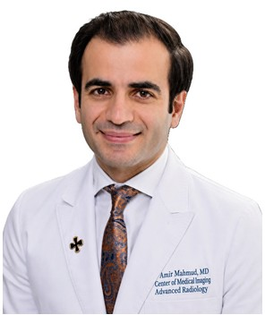

Profile
Toghrul Talishinskiy is an assistant professor of surgery and an attending physician at St. Joseph’s University Medical Center, where he is director of minimally invasive and robotic surgery, director of the minimally invasive surgery fellowship, and chief of bariatric surgery. He received an MD from the American University of the Caribbean School of Medicine in 2005–2009, after a BSc in biology and an MSc in management at Brescia University. He completed a general surgery residency at New York University, a surgical critical-care fellowship at the University of Michigan, and a minimally invasive surgery fellowship at Hackensack University Medical Center. He is a fellow of the American College of Surgeons and of the American Society for Metabolic and Bariatric Surgery.
Work experience
St. Joseph’s University Medical Center, Paterson, New Jersey, United States
Assistant professor of surgery; attending physician; director of minimally invasive and robotic surgery; director of the minimally invasive surgery fellowship; chief of bariatric surgery
- Department of Surgery
Hackensack University Medical Center, Hackensack, New Jersey, United States
July 2015–June 2016Minimally invasive surgery fellow
- Department of Surgery
University of Michigan, Ann Arbor, Michigan, United States
July 2014–June 2015Surgical critical-care fellow
- Department of Surgery
New York University, New York, United States
July 2010–June 2014General surgery resident
- Department of Surgery
New York Medical College, Sound Shore Medical Center of Westchester, New Rochelle, New York, United States
July 2009–June 2010General surgery intern
- Department of Surgery
Education
MD
September 2005–May 2009American University of the Caribbean School of Medicine
MSc
September 2004–May 2005Management
Brescia University, Kentucky, United States
BSc
September 2000–May 2004Biology, minor in chemistry. Dean’s list. Full scholarship
Brescia University, Kentucky, United States
Teaching
- November 2022 — Pediatric grand rounds: adolescent obesity — St. Joseph’s University Medical Center, Paterson, New Jersey
- November 2020 — Pediatric grand rounds: adolescent obesity — St. Joseph’s University Medical Center, Paterson, New Jersey
- November 2018 — Pediatric grand rounds: adolescent obesity — St. Joseph’s University Medical Center, Paterson, New Jersey
- Minimally invasive journal club — Residents and medical students — Hackensack University Medical Center
Publications
Book chapters
1. Mazpule, George; Grimberg, Greg; Talishinskiy, Toghrul; McCain, Donald. Surgery during pregnancy. In: Operative Obstetrics, 4th edition, 2017, pp. 487–499.
Peer-reviewed journal articles
1. Fasulo, S.; Castrodad, I.; Kraeutler, M.; Doer, N.; Talishinskiy, T.; Scillia, A. Robotic abdominal wall repair with endoscopic adductor lengthening: a minimally invasive approach for core muscle injuries. Arthroscopy Techniques, December 2022, E2233–E2241.
2. Yang, J.; Trivedi, A.; Nyirenda, T.; Shi, M.; Petit, R.; Talishinskiy, T. Histopathologic findings in laparoscopic sleeve gastrectomy: is routine full pathologic evaluation indicated? Surgery for Obesity and Related Diseases, October 2022.
3. Rajkumar, Karnan; Kulkarni, Sayali; Talishinskiy, Toghrul. Morgagni hernia: an uncommon pathology in adults. Journal of Surgical Case Reports, 2022, vol. 2022, issue 12.
4. Rajkumar, K.; Trivedi, A.; Molavi, I.; Talishinskiy, T. Combined pantaloon and femoral hernia: a common pathology in medicine occurring simultaneously. Journal of Surgical Case Reports, 19 November 2022, 2022(11), rjac514.
5. Kraeutler, M. J.; Mei-Dan, O.; Dávila Castrodad, I. M.; Talishinskiy, T.; Milman, E.; Scillia, A. J. A proposed algorithm for the treatment of core muscle injuries. Journal of Hip Preservation Surgery, 10 December 2021, 8(4), 337–342.
6. Carrano, F. M.; Weiner, S.; Elshafei, M.; Ahmed, S.; Talishinskiy, T.; Tognoni, V.; Mahawar, K.; Di Lorenzo, N. Portomesenteric vein thrombosis after bariatric surgery: an online survey. Journal of Clinical Medicine, 2021, 10, 4024.
7. Amianda, E. A.; Gavigan, T. S.; Talishinskiy, T.; Ewing, D. R.; Schmidt, H. J. Two cases of euglycemic diabetic ketoacidosis after bariatric surgery associated with sodium-glucose cotransporter-2 inhibitor use. Obesity Surgery, August 2021, 31(8), 3848–3850. https://doi.org/10.1007/s11695-021-05391-0.
8. Hajri, T.; Ewing, D.; Talishinskiy, T.; Amianda, E.; Eid, S.; Schmidt, H. Depletion of omega-3 fatty acids in RBCs and changes of inflammation markers in patients with morbid obesity undergoing gastric bypass. Journal of Nutrition, 4 September 2021, 151(9), 2689–2696. https://doi.org/10.1093/jn/nxab167.
9. Kraeutler, M. J.; Mei-Dan, O.; Belk, J. W.; Larson, C. M.; Talishinskiy, T.; Scillia, A. J. A systematic review shows high variation in terminology, surgical techniques, preoperative diagnostic measures, and geographic differences in the treatment of athletic pubalgia/sports hernia/core muscle injury/inguinal disruption. Arthroscopy, July 2021, 37(7), 2377–2390.e2. https://doi.org/10.1016/j.arthro.2021.03.049.
10. Kraeutler, M. J.; Talishinskiy, Toghrul; Scillia, Anthony. Use of preoperative magnetic resonance imaging to predict clinical outcomes following core muscle injury repair. The Orthopaedic Journal of Sports Medicine, November 2020.
11. Talishinskiy, Toghrul; Blatt, Melissa; Nyirenda, Thema; Eid, Sebastian; Schmidt, Hans; Ewing, Douglas. Insurance-mandated medical weight management programs in sleeve gastrectomy patients do not improve postoperative weight loss outcomes at 1 year. Obesity Surgery, 2020, 10.
12. Kurowicki, Jennifer; Kraeutler, M. J.; Dávila Castrodad; Talishinskiy, Toghrul; Scillia, Anthony. Diagnostic accuracy of physical examination tests in core muscle injury. American Journal of Sports Medicine, 8 June 2020.
13. Schmidt, Hans J.; Lee, Edmund W.; Amianda, Erica A.; Nyirenda, Themba L.; Talishinskiy, Toghrul; Novack, Richard C., Jr.; Ewing, Douglas R. Large series examining laparoscopic adjustable gastric banding as a salvage solution for failed gastric bypass. Surgery for Obesity and Related Diseases, September 2018.
14. Hajri, T.; Johnson, B.; Talishinskiy, T.; Mazpule, G.; Ewing, D.; Eid, S.; Novack, R.; Schmidt, H. Obesity upregulates the expression of VLDL in adipose tissue. Advances in Nutrition, 2017, 8.
15. Church, Joseph T.; Gadepalli, Samir K.; Talishinskiy, Toghrul; Teitelbaum, Daniel H.; Jarboe, Marcus D. Ultrasound-guided intrasphincteric botulinum toxin injection relieves obstructive defecation due to Hirschsprung’s disease and internal anal sphincter achalasia. Journal of Pediatric Surgery, November 2016.
16. Talishinskiy, T.; Limberg, J.; Ginsburg, H.; Kuenzler, K.; Fisher, J.; Tomita, S. Factors associated with failure of nonoperative treatment of complicated appendicitis in children. Journal of Pediatric Surgery, 2 February 2016.
17. Webman, R.; Talishinskiy, T.; Raetz, E.; Lala, S.; Tomita, S. Spontaneous regression of extraperitoneal glial implants after resection of ovarian teratoma. Journal of Pediatric Hematology and Oncology, August 2014.
18. Rockman, C. B.; Hoang, H.; Guo, Y.; Maldonado, T. S.; Jacobowitz, G. R.; Talishinskiy, T.; Riles, T. S.; Berger, J. S. The prevalence of carotid artery stenosis varies significantly by race. Journal of Vascular Surgery, February 2013, 57(2), 327–337.
19. Talishinskiy, T.; Tomita, S. Intestinal perforation in a preterm infant as an unusual initial presentation of Hirschsprung’s disease. Journal of Pediatric Surgery Case Reports, 2013, 1, 381.
Invited talks and conference participation
- September 2022 — International Federation for the Surgery of Obesity, Miami — Presentation — Residency education in bariatric surgery
- October 2020 — American College of Surgeons Clinical Congress, Chicago — Presentation — Management of thoracic duct injury during hiatal hernia repair
- September 2019 — International Federation for the Surgery of Obesity, Madrid, Spain — Presentation — Endoscopic reversal of RYGB with gastrogastric fistula creation for severe malnutrition and chronic non-healing marginal ulcer
- September 2018 — International Federation for the Surgery of Obesity, Dubai, United Arab Emirates — Presentation — Do preoperative insurance-mandated medical weight-management programs in sleeve gastrectomy patients improve postoperative weight-loss outcomes at 1 year?
- April 2018 — SAGES — Presentation — Bleeding after sleeve gastrectomy: a single-center experience
- September 2017 — International Federation for the Surgery of Obesity, London, United Kingdom — Presentation — Histopathologic findings in sleeve gastrectomy patients
- September 2017 — International Federation for the Surgery of Obesity, London, United Kingdom — Presentation — Role of Helicobacter pylori screening in sleeve gastrectomy patients
- October 2016 — Obesity Week, New Orleans, United States — Presentation — Initiation of early feeding in sleeve gastrectomy patients: a prospective observational single-institution study
- May 2016 — Digestive Disease Week, San Diego, United States — Presentation — Portomesenteric thrombosis after laparoscopic sleeve gastrectomy
- April 2015 — International Pediatric Endosurgery Group 24th Annual Conference — Presentation — Unique retrieval of ingested magnets via laparoscopic appendectomy
- 2012 — International Conference and Exhibition on Surgery and Transplantation, San Antonio, United States — Presentation — Late perforation of the jejuno-jejunal anastomosis after laparoscopic Roux-en-Y gastric bypass
- August 2012 — James W. Freston Single Topic Conference, American Gastroenterological Association — Presentation — Rapunzel syndrome
- March 2010 — Belsky Research Presentation, Danbury, Connecticut, United States — Presentation — Adult colo-colonic intussusception secondary to chronic appendicitis